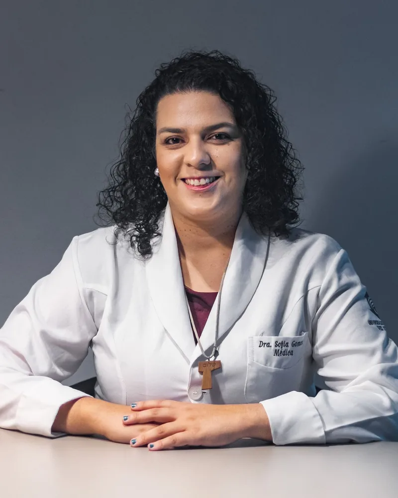

Ansiedade, depressão, TDAH, transtorno bipolar: um cuidado que trata a biologia sem esquecer a sua história. Sem lista de espera.
Dra. Sofia Teixeira Gomes · CRM-MS 14359 · Médica em Saúde Mental
Resposta em poucos minutos, no horário comercial · Sem compromisso
Como funciona o atendimento ↓Atendimento particular, sem convênios. Recibo médico para dedução no Imposto de Renda.

Três passos para começar a cuidar da sua saúde mental, de onde você estiver.
Você fala com a equipe de agendamento, que responde em poucos minutos no horário comercial. Sem formulários: ela encontra o horário certo para você.
O atendimento é online, por videochamada segura. Você pode estar em qualquer cidade do Brasil, e a qualidade do cuidado é a mesma.
Depois da avaliação, traçamos juntos um caminho terapêutico que considera sua biologia, sua história e o que faz sentido para a sua vida.
Cada transtorno tem uma neurobiologia própria. Cada pessoa tem uma história própria. O encontro entre essas duas realidades é onde o tratamento verdadeiro acontece.
Oscilações de humor que vão muito além de "altos e baixos". Têm substrato neurobiológico próprio e podem ser acompanhadas com tratamento adequado.
Saiba mais →Mais do que tristeza: uma condição que altera química cerebral, sono, corpo e sentido de vida. Existem abordagens para casos que não responderam a tratamentos anteriores.
Saiba mais →Desatenção, impulsividade, sensação crônica de não corresponder ao próprio potencial. O cérebro adulto com TDAH precisa de suporte especializado, não de mais esforço.
Saiba mais →TAG, Pânico, TOC, Fobia Social: quando o sistema de alarme do cérebro não encontra descanso. Existe caminho para recuperar a liberdade de viver.
Saiba mais →Uma doença do cérebro com raízes biológicas profundas, que merece cuidado médico especializado, sem julgamento e sem moralização.
Saiba mais →Manejo farmacológico cuidadoso, escuta atenta à pessoa (não apenas ao diagnóstico), e suporte à família que também precisa de cuidado.
Saiba mais →Sou a Dra. Sofia. Escolhi a Psiquiatria porque entendo que o sofrimento psíquico é uma das maiores causas de dor do ser humano hoje, e a minha missão é ajudar a aliviar esse peso. A saúde mental é o território onde a biologia e a humanidade se encontram de forma mais intensa, e é exatamente aí que o cuidado de verdade acontece.
Atendo online quem chega cansado de funcionar no automático: ansiedade que não dá trégua, esgotamento que virou rotina, uma tristeza que ninguém de fora enxerga.
Minha formação é ancorada na neurociência: estudo os mecanismos moleculares do cérebro, a psicofarmacologia de precisão, as bases biológicas do sofrimento. Mas nunca perco de vista que existe uma pessoa por trás de cada neurônio.
Muita gente sente que precisa escolher entre procurar um médico e cuidar da própria fé. Não precisa. Enxergo mente, corpo e espírito como dimensões inseparáveis do seu bem-estar, e parte do que faço é distinguir o que é sintoma do que é experiência de fé, porque tratar um pelo outro só atrapalha.
O tratamento que ofereço parte da evidência científica mais atual e chega até você como cuidado real, não protocolo: escuta, avaliação, diagnóstico, medicação quando é preciso e acompanhamento de perto. Sem prometer milagre, sem tratar remédio como vilão. Cada caso é um caso.
Fora do consultório eu estudo, ensino e escrevo sobre tudo isso, porque saúde mental e vida interior merecem rigor, não fórmula pronta.
CRM-MS 14359 | Residente em PsiquiatriaRelatos espontâneos publicados por pacientes em avaliações públicas no Google.
"Desde a primeira consulta, me senti acolhido e compreendido. A Dra. Sofia é extremamente atenciosa, humana e transmite uma segurança que faz toda a diferença no tratamento. Ela escuta com empatia, explica tudo com clareza e sempre busca a melhor abordagem para cada caso."
"A Dra. Sofia é uma profissional excelente extremamente competente, estudiosa e de uma humanidade única! Só elogios pra essa médica maravilhosa!"
"Excelente profissional, sempre teve muito cuidado comigo e meu tratamento, além de ser muito atenciosa com minhas demandas e de compreender minha realidade. Indico para todos!"
"Médica excelente, empática, atendimento muito humanizado."
Respostas diretas para as dúvidas mais comuns sobre o atendimento.
Conteúdo escrito pela Dra. Sofia para quem quer entender melhor o que está sentindo antes de dar o próximo passo.
Teste de 8 minutos com escalas usadas por psiquiatras no mundo todo (WHO-5, PHQ, GAD, ASRS). Resultado na hora, sem cadastro.
Fazer o Check-up →Ferramenta educativa. Não é diagnóstico e não substitui avaliação médica.
Como as telas estão sequestrando sua atenção, a diferença entre TDAH e exaustão digital, e um protocolo prático para recuperar o foco.
Sem lista de espera. Atendimento particular, online, acolhedor e baseado em evidência. Agende pelo WhatsApp.
💬 Agendar minha primeira consultaAtendimento particular, sem convênios. Pagamento via PIX, débito ou crédito (até 2x). Recibo para dedução no IR.